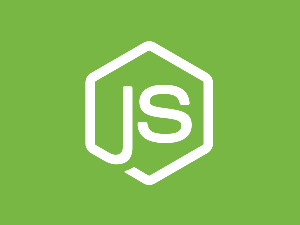
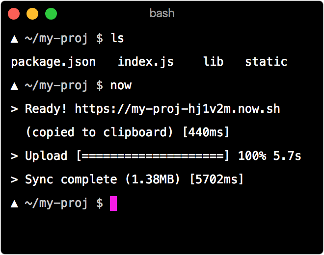
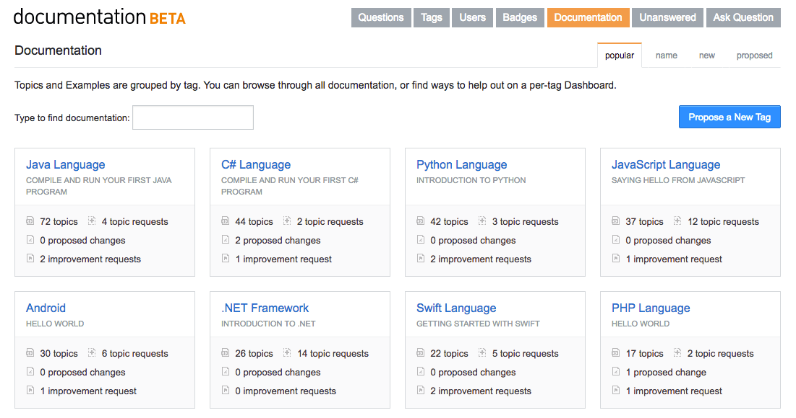
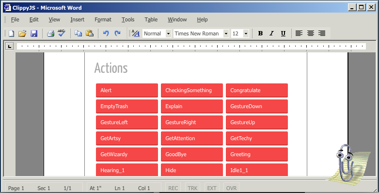

Bleeding Edge Web: March 2016
Announcements
News from the Bleeding Edge
— Brian Moeskau (@bmoeskau)
Microservices Panel Discussion
Lightning Talks
Thanks to our venue sponsor:
Thanks to our food sponsor:
News from the
Bleeding Edge
Browser Pop Quiz
Last version check — March 23, 2016:
Browser Pop Quiz
As of April 27, 2016:
WebRTC Update
A free, open project that provides browsers and mobile applications with Real-Time
Communications (RTC) capabilities via simple APIs.
- Real-time, plugin-free peer-to-peer communication
- Supported by Google, Mozilla, Opera and others
- Good overview
WebRTC Update
ORTC (Object RTC)
WebRTC Update
That leaves Safari as the lone significant holdout

Notable Releases
- Parallel fetch of submodules
- Convergence with Git for Windows (ongoing)
- Fixes for fairly serious
security issues
(recommended: 2.4.11+, 2.5.5+, 2.6.6+, 2.7.4+, or 2.8.0+)
- Lots more, see the full release notes
Notable Releases
- Uses
document.createElement instead of innerHTML
- Improved SVG support
- Includes some breaking changes
They also plan to add an RFC process (also inspired by Ember RFCs)

Notable Releases
- Ships with v5.0 of Chrome's V8 engine
- 93% ES2015 API support
- Huge performance and memory improvements
- Will become the official LTS version in October

Notable Releases
Open source CI / deployment automation
- New sophisticated pipeline support
- "More sensible out of the box experience"
- UX improvements to the web app
Attend the virtual
launch party on May 4th
Realtime node.js deployments
- Any folder with a
package.json becomes a deployable service
- "a CDN for dynamic code" – unique url for every deploy
- "Free forever" open source plan

React Native + UWP
Extends the reach of React Native apps to a new market of 270 million active Windows 10 devices
UWP = Universal Windows Platform
Announced
April 13th at the F8 conference
- Developed by Microsoft
- React JS code transpiled to native C#
- Source is available on Github
Stack Overflow Documentation
docs-beta.stackexchange.com (currently requires beta access)
- Collaborative general reference docs (not Q&A)
- Organized by subject / framework / language
- Versioning, inline examples, reputation and more

And now for something completely different...
People love two things: failed Microsoft technologies and obscure Javascript
libraries. Naturally, we decided to combine the two.
- Full JS implementation of MS Agent (aka Clippy & friends)
- What are you waiting for? Try it now!

All things DevOps related
- $210 to attend (almost sold out!)
- Audience: developers and devops engineers
- May 2-3
- At UT's Royal stadium
Explore what's new in open source languages, tools, and techniques
- $$$ to attend
- Audience: developers
- May 16-17 (tutorials) & 18-19 (conference)
- At Austin Convention Center
- OSCON
Kids Day on Sunday, May 15
It's a 2-day training in .Net, HTML5, JavaScript, EcmaScript, Web API and REST, Sharepoint, and other awesome technologies
- $75+ to attend ($20 discount with code "Meetup")
- Audience: .NET developers
- May 27-28
- At Addison Convention Center (Dallas)
Thanks!
 ←
→
←
→
/
#